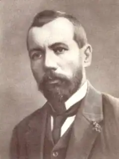
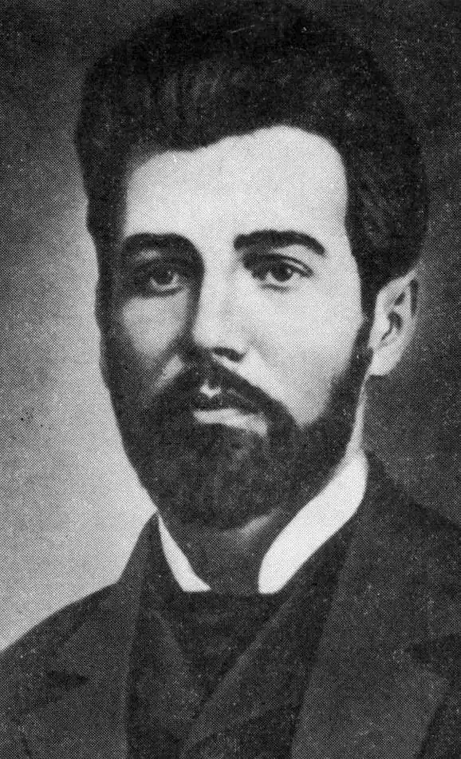
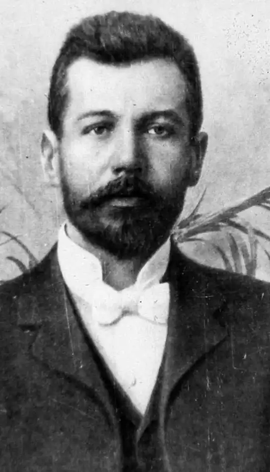
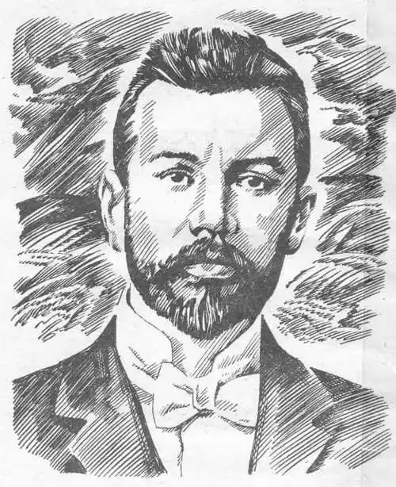

ВАСИЛЬ СТЕФАНИК
(1871 — 1936)
Народився Василь Семенович Стефаник 14 травня 1871р. в с. Русові (тепер Снятинського району Івано-Франківської області) в сім'ї заможного селянина. 1883р. Стефаник вступає до польської гімназії в Коломиї, де з четвертого класу бере участь у роботі гуртка гімназичної молоді. Учасники гуртка вели громадсько-культурну роботу серед селян (зокрема, організовували читальні). Стефаник-гімназист починає пробувати сили в літературі. Зі своїх перших творів Стефаник опублікував без підпису лише один вірш. У співавторстві з Мартовичем написав два оповідання: "Нечитальник" (1888) та "Лумера" (1889). У 1890р. Стефаник у зв'язку із звинуваченням в нелегальній громадсько-культурній роботі змушений був залишити навчання в Коломиї і продовжити його в Дрогобицькій гімназії. Там він брав участь у громадському житті, став членом таємного гуртка молоді, особисто познайомився з Франком, з яким потім підтримував дружні зв'язки. Після закінчення гімназії (1892) Стефаник вступає на медичний факультет Краківського університету. Однак, за визнанням письменника, з тією медициною "вийшло діло без пуття". Замість студіювання медицини він поринає у літературне і громадське життя Кракова. Тут існувало товариство студентів-українців "Академічна громада". Більшість студентів, які належали до нього, тягнулися до радикальної партії. До них приєднався і Стефаник. У студентські роки він особливо багато читає, пильно стежить за сучасною літературою, зближується з польськими письменниками. Стефаник-студент бере активну участь у громадському житті рідного Покуття, розширює творчі контакти з українськими періодичними виданнями, активізує свою діяльність як публіцист. Після опублікування в 1890р. першої статті — "Жолудки наших робітних людей і читальні" — він у 1893 — 1899 рр. пише і друкує в органах радикальної партії "Народ", "Хлібороб", "Громадський голос" та "Літературно-науковому віснику" ряд статей: "Віче хлопів мазурських у Кракові", "Мазурське віче у Ржешові", "Мужики і вистава", "Польські соціалісти як реставратори Польщі od morza do morza", "Книжка за мужицький харч", "Молоді попи", "Для дітей", "Поети і інтелігенція". 1896 — 1897 рр. — час особливо напружених шукань Стефаника. Намагання його відійти від застарілої, як йому здавалося, описово-оповідної манери своїх попередників на перших порах пов'язувалося з модерністичною абстрактно-символічною поетикою. У 1896 — 1897 рр. він пише ряд поезій у прозі і пробує видати їх окремою книжкою під заголовком "З осені". Та підготовлена книжка не зацікавила видавців, і письменник знищив рукопис. Кілька поезій у прозі, що лишилися в архівах друзів Стефаника, були опубліковані вже після його смерті ("Амбіції", "Чарівник", "Ользі присвячую", "У воздухах плавають ліси", "Городчик до бога ридав", "Вночі" та ін.). 1897р. у чернівецькій газеті "Праця" побачили світ перші реалістичні новели Стефаника — "Виводили з села", "Лист", "Побожна", "В корчмі", "Стратився", "Синя книжечка", "Сама-саміська", які привернули увагу літературної громадськості художньою новизною, глибоким та оригінальним трактуванням тем з життя села. Проте не всі відразу зрозуміли і сприйняли нову оригінальну манеру Стефаника. Коли невдовзі письменник надіслав нові новели — "Вечірня година", "З міста йдучи", "Засідання" — в "Літературно-науковий вісник", то у відповідь дістав лист-пораду, зміст якого зводився по суті до невизнання манери Стефаника. Це й викликало появу листа Стефаника від 11 березня 1898р. до "Літературно-наукового вісника", адресованого фактично О. Маковею. Він являє собою своєрідне літературне кредо Стефаника, його справді новаторську ідейно-естетичну програму. Перша збірка новел — "Синя книжечка", яка вийшла у світ 1899р. у Чернівцях, принесла Стефаникові загальне визнання, була зустрінута захопленими відгуками найбільших літературних авторитетів, серед яких, крім І. Франка, були Леся Українка, М. Коцюбинський, О. Кобилянська, стала помітною віхою в розвитку української прози. Автор "Синьої книжечки" звернув на себе увагу насамперед показом трагедії селянства. Новели "Катруся" і "Новина" належать до найбільш вражаючих силою художньої правди творів Стефаника. Вони стоять поряд з такими пізнішими його шедеврами, як "Кленові листки", "Діточа пригода", "Мати" та ін. Майстерно змальовано в цих творах трагічні людські долі. Героїчний склад художнього мислення Бетховена, невід'ємною ознакою якого є вражаюча масштабність почуттів, думок, картин, можна впізнати в окремих новелах Стефаника ("Сини", "Марія"). У листі до редакції "Плужанина" від 1 серпня 1927р. Стефаник, заперечуючи трактування його як "поета загибаючого села", зазначав: "Я писав тому, щоби струни душі нашого селянина так кріпко настроїти і натягнути, щоби з того вийшла велика музика Бетховена. Це мені вдалося, а решта — це література". У 1900р. вийшла друга збірка Стефаника — "Камінний хрест", яку також було сприйнято як визначну літературну подію. Для другої збірки Стефаника характерне посилення громадянського пафосу (завдяки таким творам, як "Камінний хрест", "Засідання", "Лист", "Підпис"). У другій збірці головне місце займає тема, що хвилювала письменника протягом усього творчого життя, — одинока старість, трагедія зайвих ротів у бідних селянських родинах. Цій темі цілком присвячені твори із "Синьої книжечки" ("Сама-саміська", "Ангел", "Осінь", "Школа"), новели зі збірок "Камінний хрест" ("Святий вечір", "Діти"), "Дорога" ("Сніп", "Вістуни", "Озимина"). Цікавить Стефаника вона й у другий період творчості, хоч уже в іншому плані ("Сини", "Дід Гриць", "Роса", "Межа"). 1901р. вийшла в світ третя збірка новел Стефаника — "Дорога", яка становила новий крок у розвитку його провідних ідейно-художніх принципів. Це наявне у своєрідній поетичній біографії Стефаника "Дорога" та роком раніше написаній ліричній сповіді "Confiteor", що в переробленому вигляді була надрукована під назвою "Моє слово". У збірці переважають новели безсюжетні, лірично-емоційного плану ("Давнина", "Вістуни", "Май", "Сон", "Озимина", "Злодій", "Палій", "Кленові листки", "Похорон"). Тема матері і дитини, жертовності материнської, батьківської любові з'являється в Стефаника у життєвому переплетінні з іншими темами ще в збірці "Синя книжечка" ("Мамин синок", "Катруся", "Новина"). Наявна вона й у збірці "Камінний хрест". У "Літературно-науковому віснику" за 1900р. український читач відкрив для себе Стефаникову новелу "Кленові листки", яка стала окрасою збірки "Дорога". 1905р. вийшла в світ четверта збірка письменника — "Моє слово". В ній уперше була надрукована новела "Суд", яка завершує перший період творчості Стефаника. У пору імперіалістичної війни і великих соціальних потрясінь, розпаду Австро-Угорської імперії і народження Радянської країни Стефаник знову береться за перо новеліста. Почався другий період його творчості, не такий інтенсивний, як перший, але з чималими здобутками. Хронологічним початком цього періоду можна вважати новелу "Діточа пригода" (написана восени 1916р., а опублікована на початку 1917р.). 1916р. Стефаник пише новелу "Марія", яку присвячує пам'яті Франка. За "Марією" письменник публікує шість новел, які разом із двома названими творами другого періоду ("Діточа пригода" і "Марія") склали п'яту збірку — "Вона — земля", видану 1926р. У 1927 — 1933 рр. Стефаник опублікував ще більше десяти новел. В останні роки життя Стефаник пише також автобіографічні новели, белетризовані спогади. До них належать такі твори, як "Нитка", "Браття", "Серце", "Вовчиця", "Слава йсу", "Людмила", "Каменярі". У роки перебування Західної України під владою Польщі Стефаник жив майже безвиїзне в с. Русів, де й писав останні твори у вільну від хліборобської праці хвилину. До самої смерті не полишало Стефаника бажання "сказати людям щось таке сильне і гарне, що такого їм ніхто не сказав ще". І на його долю випало найбільше для художника щастя — він сказав те, що хотів, і сказав так, як хотів.